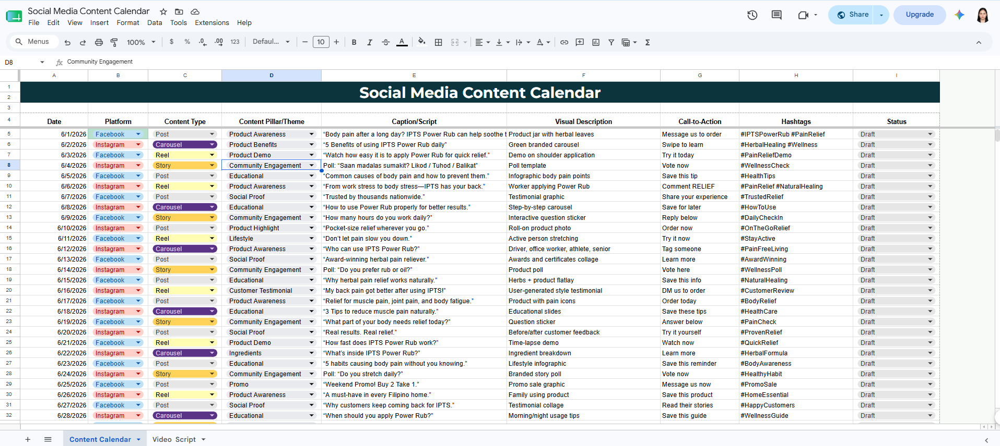

Supported content planning and community growth for a health and wellness brand.
The brand needed consistent content planning, organized digital assets, and better market research to sustain engagement.
I created content calendars, organized brand assets, conducted competitor research, and supported community engagement.
Meta Business Suite • Canva • Google Workspace • ChatGPT
✔ Supported 9.9K community growth
✔ Organized content workflow
✔ Improved content consistency
✔ Better audience engagement